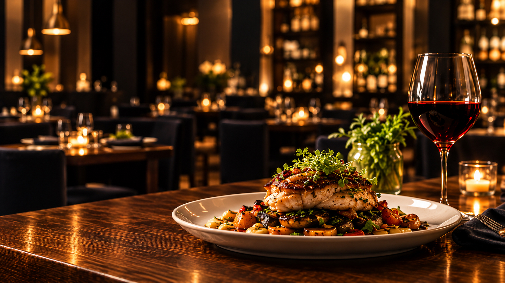

Hand-cut pasta
22Rolled each morning, sauced to order, finished at the pass with cultured cream.

A short menu that changes with the coast, a wine list chosen by the people who pour it, and a dining room built for long conversations.
Rolled each morning, sauced to order, finished at the pass with cultured cream.

Brined two days, cooked over embers, carved at the table for two.

Soft, citrus-heavy, served with whatever stone fruit is best that week.
A nine-seat pass, one sauce station, and a menu short enough that everything leaving the kitchen has been tasted that evening.
The dining room seats fifty-two. That is deliberate. It is the largest number our kitchen can cook for without the menu getting longer or the service getting faster than it should be.
“People do not choose a restaurant from a PDF menu that will not open on their phone.”Design rationale · illustrative copy
A hundred and eighty bottles, half of them under fifty dollars, all of them poured by someone who can tell you why they are on the list.
Rotated weekly, preserved under argon, listed with producer and vintage rather than just “house red.”
Built around the tasting menu each week. Half pours available, and a thoughtful zero-proof flight.
Twenty-five dollars per bottle, two bottles per table, waived if it is not already on our list.
Rehearsal dinners, company tables, birthdays that need a door that closes.
Seats 10–18. Own entrance, no minimum on weeknights.
Up to 28 guests. Set menu of three courses, chosen with you.
Up to 52 guests. Sunday and Monday availability.
The sixteen seats at the bar are held for walk-ins every night, and the full menu is served there. The dining room is reservation-led, especially Thursday through Saturday.
Tell us when you book. The kitchen is small enough that the chef sees every note, and there is always a vegetarian main on the menu rather than a last-minute improvisation.
No. Come as you would to a friend’s dinner table.
Thirty days, at nine in the morning. Cancellations are released back automatically, so the waitlist genuinely moves.
Almost certainly, and that is the point. A real build keeps the published menu in sync with the kitchen so nobody arrives expecting a dish that left last week.
Tue–Thu 5:00–9:30pm
Fri–Sat 5:00–11:00pm
Sunday 4:00–9:00pm
Monday closed
214 Harbor Street
Suite B
Your City, SC 29526
Street parking after 5pm
(555) 014-2200
book@harborandvine.example
Walk-ins at the bar
Live table availability, a menu your kitchen edits itself, Google Business sync, and event enquiries routed to one inbox.
Your photography, your menu, your reservation system. The structure above is the starting point, not the finished article.
Harbor & Vine is an original website concept created by NextDay Digital to demonstrate layout, typography and conversion flow for this industry. The business, staff, hours, address, telephone number, prices and reviews shown are invented placeholders. Not a real business, client project or endorsement. Your site would use your own branding, photography and approved content.